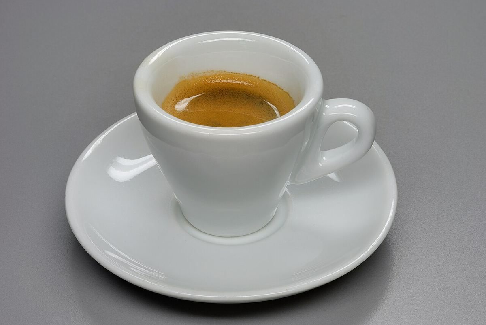
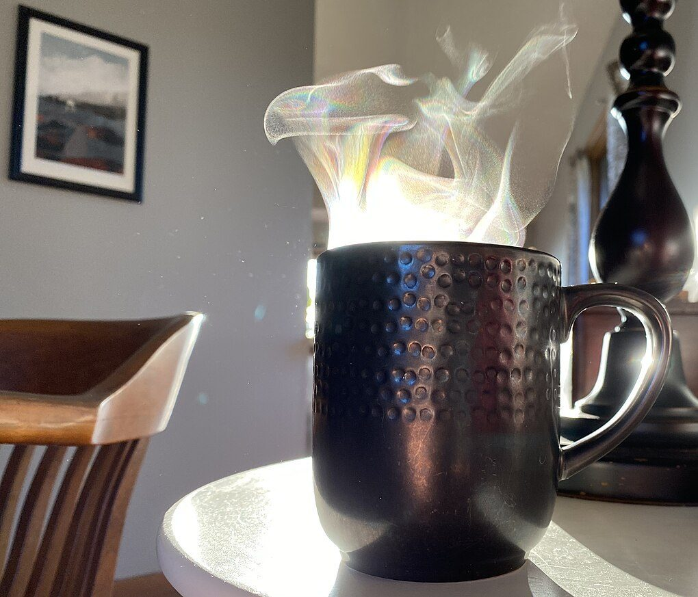

制作側の連想
ベッドの板を、配置図にしてみる
このサイトは、背や膝を持ち上げて形を変える電動リクライニングベッドを、横から見た図にしたつもりで作りました。六つの部位に番号をふり、上の図と並べています。制作側の連想で、お店の理念・由来とは無関係です。実際の製品の仕様を示すものでもありません。
凡例
六つの部位
- 1背ボトムマットレスの下で、上体側を起こすために持ち上がる板。
- 2腰ボトム中央に据えて、腰まわりを受けておく板。
- 3膝ボトム背ボトムとは別の向きに、膝のあたりで折れ曲がる板。
- 4脚ボトム膝ボトムの先に続いて、足元側を受ける板。
- 5ボード(頭側・足側)ベッドの両端に立てる板。頭側と足側で一対。
- 6手元スイッチコードの先にある、板の動きを選ぶための小さな操作器。



ギャラリー(イメージ)
コーヒー豆とパンの写真


写真はコーヒーやパンのイメージです。お店のものではなく、お店で提供している商品を示すものでもありません。
ご案内
お店のこと(確認できたものだけ)
| 所在地 | 〒425-0012 静岡県焼津市浜当目４丁目１３−１８ |
|---|---|
| 電話 | 準備中 |
| 営業時間 | 準備中 |
| 定休日 | 準備中 |
| ご予約 | 準備中 |
| 駐車場 | 準備中 |
| SNS | Instagram @atabee0409 |